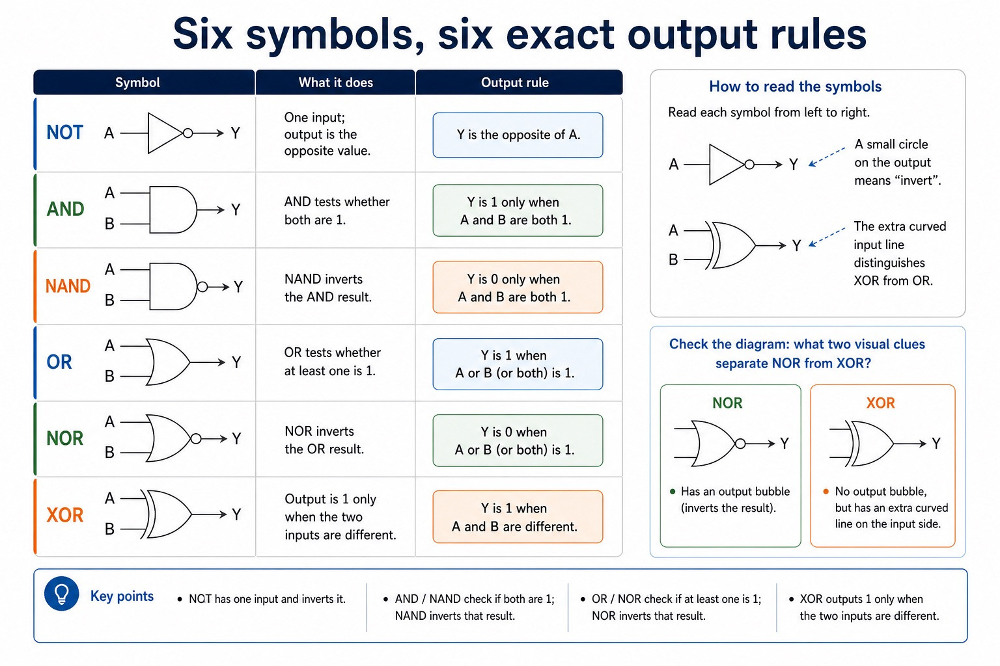

S3.10 | Visual relationships, mechanisms and worked examples.
Quickdiagnose + essentials
Fullcomplete explanation
Deepprerequisites + extension
Choosepractice by need
Teacher choice
Choose the depth for this group
Quick route
Use the diagnostic, learning objectives, first worked example and foundation question. Stop once the learner can explain the central distinction accurately.
Full route
Teach every knowledge-point material set, the worked method and all lesson questions.
Deep route
Add the prerequisite refresher, ask learners to connect the concept checklist, discuss the labelled extension and complete a transfer question without a model answer.
Part 1 | optional depth
Prerequisite knowledge and quick diagnostic
Recall S1.02 before starting this lesson.
Give one accurate definition or method step before continuing. If it is missing, revisit only that prerequisite.
Open optional prerequisite refresher
The syllabus requires binary, denary, hexadecimal, Binary Coded Decimal (BCD), one's complement and two's complement; BCD and complements are representations rather than additional number bases.
Show understanding of binary, denary and hexadecimal number systems, BCD, and one's- and two's-complement representations.
Part 2 | visual explanation
Learn each point through visuals
Use the relationship map, mechanism and concrete cue before opening precise wording.
01
S3.10 · process
NOT, AND, OR, NAND, NOR and XOR; use symbols/functions/truth tables and convert among problem, expression, circuit…
Concept relationships
truth tableSymbols/functions/truth tables and convert among problem, expression, circuit…
problem statementProblem statement, logic expression, logic circuit and truth…
NANDThe standard symbols and exact functions of NOT,…
NORThe standard symbols and define the functions of…
XORNOT, AND, OR, NAND, NOR and XOR
symbolDo not substitute a labelled box when a…
See how it works
Plan
Translate the stated design
Symbols/functions/truth tables and convert among problem, expression, circuit and truth table.
Execute
Apply one complete operation
The standard symbols and exact functions of NOT, AND, OR, NAND, NOR and XOR (EOR).
Test
Trace state and boundaries
The standard symbols and define the functions of NOT, AND, OR, NAND, NOR and XOR (EOR)
S3.10 diagrams
01
Diagram · 1 of 1
Six symbols, six exact output rules

Open text transcript
Visual explanation
Read each symbol from left to right. A small circle on the output means “invert”; the extra curved input line distinguishes XOR from OR.
NOT One input; output is the opposite value.
AND / NAND AND tests whether both are 1; NAND inverts that result.
OR / NOR OR tests whether at least one is 1; NOR inverts that result.
XOR Output is 1 only when the two inputs are different.
Check the diagram: what two visual clues separate NOR from XOR?
NOR has an output bubble. XOR has no output bubble, but it has an extra curved line on the input side.
Open precise syllabus wording
Understand NOT, AND, OR, NAND, NOR and XOR; use symbols/functions/truth tables and convert among problem, expression, circuit and truth table.
Use the standard symbols and define the functions of NOT, AND, OR, NAND, NOR and XOR (EOR); all gates except NOT have two inputs. Construct circuits, truth tables and expressions from each of the other stated representations: problem statement, logic expression, logic circuit and truth table.
Open precise terminology and exam facts
Use the standard symbols and define the functions of NOT, AND, OR, NAND, NOR and XOR (EOR); all gates except NOT have two inputs. Construct circuits, truth tables and expressions from each of the other stated representations: problem statement, logic expression, logic circuit and truth table.
Use the standard symbols and exact functions of NOT, AND, OR, NAND, NOR and XOR (EOR). NOT has one input; each of the other five gates has two inputs for this syllabus. A truth table lists every input combination and the resulting output according to the gate or circuit function.
You must be able to construct a logic circuit from a problem statement, logic expression or truth table; construct a truth table from a problem statement, logic circuit or logic expression; and construct a logic expression from a problem statement, logic circuit or truth table. Move through variables and conditions first, then intermediate gate outputs, then the final output so every representation can be checked against the same rows.
Each standard gate symbol identifies its function; do not substitute a labelled box when a logic-circuit symbol is required.
Worked method
Convert one rule among four representations
an alarm sounds when the system is armed and either the door or window is open.
Define A, D and W; write Alarm = A AND (D OR W); draw an OR gate for D and W feeding an AND gate with A; then list all…
Part 3 | select by learner need
Practice by question type
constructdiagramfoundation4 marks
Question 1. A truth table gives output 1 only when input A is 1 and input B is 0. Construct a logic expression and describe the corresponding circuit.
Show answer and marking guidance
Answer: identifies that B must be inverted; constructs expression Q = A AND NOT B; B is connected to a NOT gate; A and the NOT-gate output are connected to an AND gate whose output is Q
Marking guidance: Do not accept XOR: XOR is also 1 for A=0, B=1, which contradicts the given truth table.
Common error: For the command word construct, perform that exact action; do not replace it with an unrelated fact.
identifyrecallapplication2 marks
Question 2. Identify the three possible sources from which a logic circuit may be constructed.
Show answer and marking guidance
Answer: A problem statement, a logic expression or a truth table.
Marking guidance: Award one mark for each distinct, technically accurate point or method step.
Common error: Do not repeat the same point in different words; each mark needs a separate idea or method step.
explainexplaintransfer2 marks
Question 3. How many inputs does NOT have, and how many do the other specified gates have in this syllabus?
Show answer and marking guidance
Answer: NOT has one input; AND, OR, NAND, NOR and XOR each have two inputs.
Marking guidance: Award one mark for each distinct, technically accurate point or method step.
Common error: Do not copy the worked example unchanged; transfer the method and check it against the new context.
Related past-paper indexes
Reference
Marks
Command word
Question type
9618/11/S/25 Q1(a)
2
write
recall
9618/11/S/25 Q1(b)
2
complete
recall
9618/11/W/25 Q3(a)
2
draw
diagram
9618/11/W/25 Q3(b)
2
draw
diagram
Index only: Cambridge question and mark-scheme wording is not reproduced on this public course page.
Part 4 | close when ready
Summary and exam reminders
Summary
Define logic gates, symbols and truth tables with the exact technical vocabulary expected by the syllabus.
Use the lesson method on a fresh context and show the intermediate decision, representation or calculation.
Match the shape of the answer to the command word and the available marks.
Check the final answer against the scenario instead of repeating a memorised sentence.
Common error to correct
Students often use everyday 'or' instead of logical OR. Correction: OR is true when at least one input is true unless XOR is specified.
Exam technique
Follow the command word: state gives a fact; explain links a cause to a consequence; compare covers both sides.
Match the number of independent points or method steps to the available marks.
For logic gates, symbols and truth tables, use the exact technical term before applying it to the scenario.